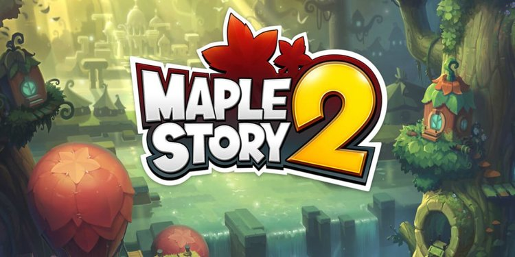
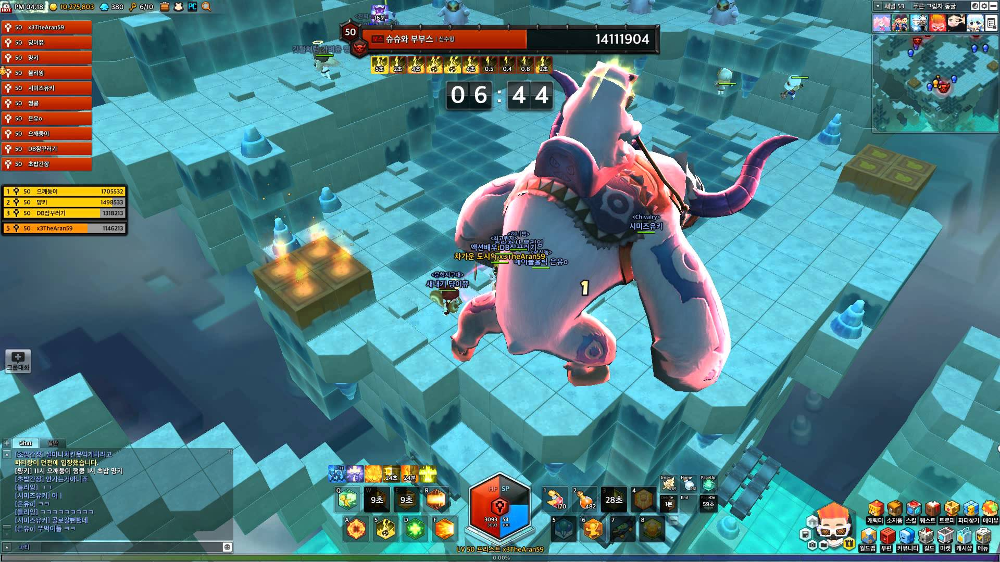

RANKED LAST: MAPLESTORY 2
Maplestory 2 is a special one on this list as it has not been released in North America yet. Following its predecessor Maplestory 1, MS2 is similar only in name. The game has evolved to become a block-based 3-D world, similar to that of Minecraft, removing the 3rd dimension limitations that the original game often had in terms of content. Although it has been released for about 2 years in Korea and China, the closed beta release of Maplestory 2 in NA was only recently announced mid-April in 2018, set for early May. Speculations are that a public release is set during the beginning to Summer to capture students coming back from school. MS2 is all about customization, and a large part of its selling point is the customization players can make towards housing and outfits, where players are able to create and upload their own designs to be flaunted in game. Keep an eye on this game, as MS2 may be deemed the flavour of the month, with many older wanting to give the game a try following a nostalgia-filled MS1 from a decade ago.
Details:
Release Year: 2018
Payment Model: Free to play with microtransactions
Latest Expansion Date: N/A
Next Expansion Date: N/A
Total Accounts Created: N/A
Current Active Playerbase: N/A
Company: Nexon
Release Year: 2018
Payment Model: Free to play with microtransactions
Latest Expansion Date: N/A
Next Expansion Date: N/A
Total Accounts Created: N/A
Current Active Playerbase: N/A
Company: Nexon

Rankings: